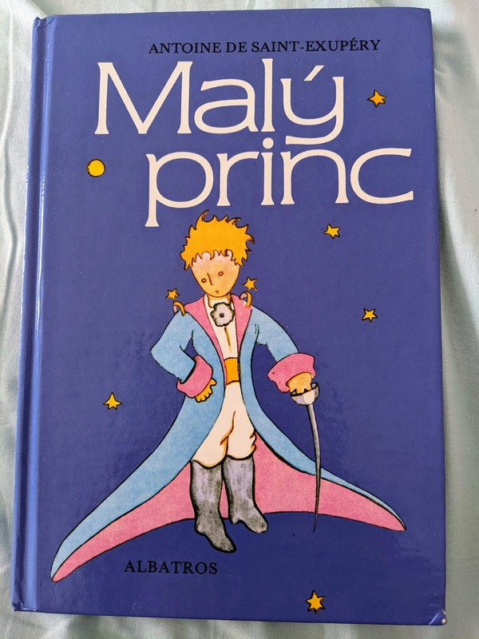
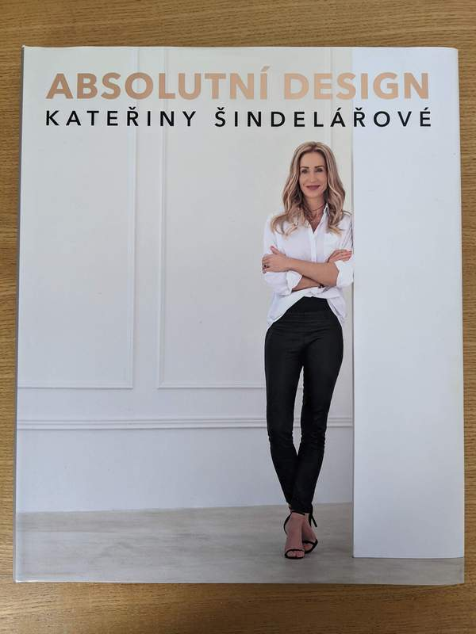
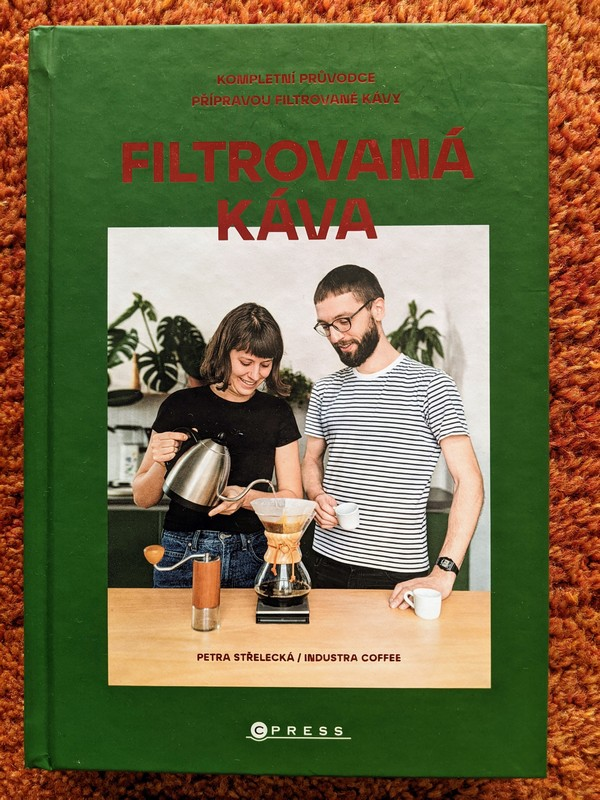
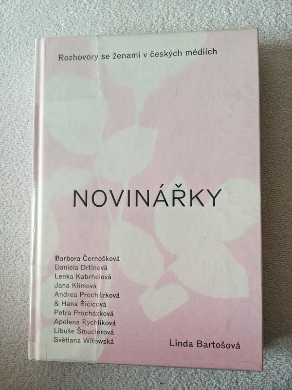
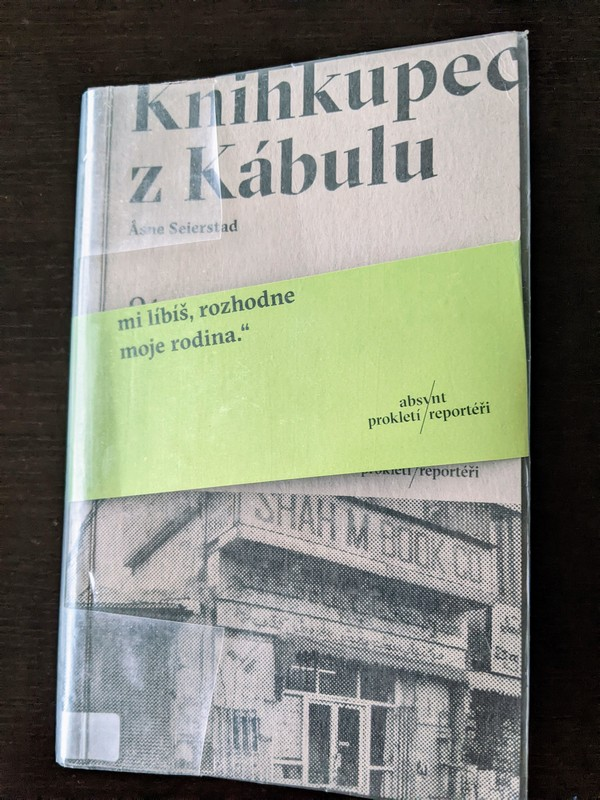
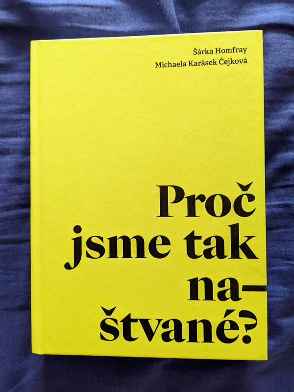
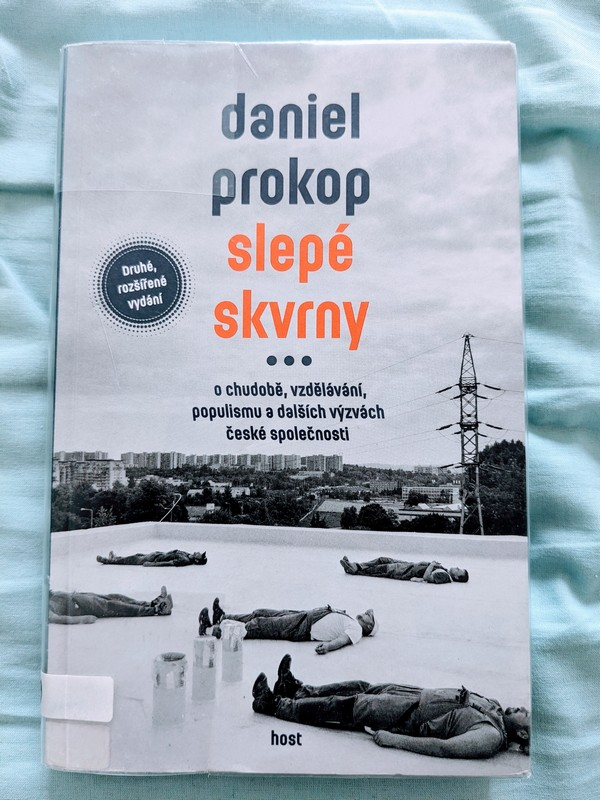

Tak se zdá, že zima to má pro letošek spočítané. Je tedy nejvyšší čas na pravidelné čtvrtletní shrnutí knih, které mi tentokrát dělaly společnost nejen za dlouhých zimních večerů a líných zimních rán, ale také při mých cestách vlakem do práce. Jednou z výhod dojíždění je totiž více času na čtení :-)
Antoine de Saint-Exupéry - Malý princ
“Co mi radíte, abych navštívil?” zeptal se.
“Planetu Zemi,” odpověděl zeměpisec. “Má dobrou pověst…”
Kdo by neznal Malého prince - knížku, kterou jsme alespoň jednou během života četli všichni? Můj dávný úlovek z kroměřížského antikvariátu se po letech zase dočkal oprášení. “Pohádka pro dospělé” nevelkého rozsahu s půvabnými ilustracemi a řadou nenápadně včleněných životních mouder je prostě nestárnoucí…

Absolutní design Kateřiny Šindelářové
Tuhle knížku si pořídil někdy během loňského roku Péťa. Byl to asi nějaký hype ze sociálních sítí a po jejím pročtení musím říct, že za ty peníze absolutně nestojí. Vizuálně je samozřejmě moc hezká, je to taková ta kniha, kterou si rádi někde vystavíte a je příjemné v ní listovat (velký formát, kvalitní papír, hodně fotek…) Informačně přínosná ale z mého pohledu nijak zvlášť není. Minimálně pokud se o interiérový design už trochu víc zajímáte a máte něco načteno. Kniha jde se svými doporučeními velmi po povrchu, skáče z tématu na téma a žádným se přitom nezaobírá víc do hloubky. Na druhou stranu tam místy najdete různé “random” informace zcela konkrétního rázu, třeba podle jakého vzorce si spočítat spotřebu rolí při tapetování :-D. Předpokládala bych ale, že tuhle informaci vám snad sdělí každé tapetové studio, když přijde na věc 8-) Kniha se zaobírá zejména plánováním realizace a jde místnost po místnosti, což možná může navést někoho, kdo je s projektem v úplných začátcích, ale v naší fázi, kdy už prakticky bydlíme, kniha valný přínos nemá. Popravdě se mi ani moc nelíbily ty autorčiny realizace, které jsou velmi luxusní, ale na mě to působí až neosobně, chladně a nezabydleně, tak nějak “katalogově”… S tím souvisí i to, že řada doporučovaných řešení je sice krásná, čistá, elegantní, ale taky nákladná a řadu z nich si může dovolit jen ten, kdo neřeší peníze. Abych ale pouze nehanila, nadchla mě kapitola Atmosféra a styl, která se zabývá barvami v interiéru a výběrem doplňků. Její součástí je i kapitola věnující se nejslavnějším designérům a jejich ikonickým kouskům. Ta mi přišla opravdu informačně přínosná a hlavně jsem se konečně dozvěděla, proč je mezi lidmi, zajímajícími se o moderní design, tak populární ta “ptačí soška” (“Eames House Bird”, kterého proslavil americký designerský pár Charles a Ray Eames). Kdyby kniha tomuto tématu věnovala více prostoru, asi by moje hodnocení nebylo tak přísné. Takto to pro mě bylo bohužel spíš zklamání.

Petra Střelecká - Filtrovaná káva
Když v roce 2022 vyšla tato kniha, hned mi bylo jasné, že by to mohl být perfektní dárek pro Péťu, našeho kávového fajnšmekra. Tento “kompletní průvodce přípravou filtrované kávy”, jehož autorkou je zakladatelka brněnské kavárny Industra Coffee, je podle mě skvělý jak pro ty, kteří se o přípravu kvalitní kávy zajímají více do hloubky, tak i pro kávové laiky jako jsem já. Obsahuje totiž velmi přesné a polopatistické návody na přípravu filtrované kávy různými způsoby a s různými pomůckami. Dozvíte se z ní ale i spoustu zajímavostí o kávě jako plodině, o její cestě od zrnka až po nápoj ve vašem šálku, ale třeba i o tom, jak ji správně degustovat. Knihu doplňuje i série receptů, a to jak na kávové nápoje, tak i na dezerty, které kávu skvěle doplní. Publikace je moc pěkná i po grafické stránce a doplňuje ji spousta fotek. Myslím, že se rozhodně neztratí v knihovničce žádného kávového nadšence. A já jsem se podle ní konečně naučila připravovat dobrou kávu v chemexu :-)!

Linda Bartošová - Novinářky
I tady u nás na “dědině” :-) máme knihovnu a musím říct, že dle výběru titulů je to knihovna velice dobrá! Obzvlášť oceňuji, že dětské oddělení je nahoře na “galerii”, takže když tam s O. vybíráme, pokukuju po očku dolů na vystavené knihy v oddělení pro dospělé a vybírám a při odchodu už jen rychle zaběhnu pro to, co mě na dálku zaujalo :-D Takto jsem tam při naší minulé návštěvě “ulovila” Novinářky. Jedná se o sérii interview s ženami, které se prosadily v oblasti médií. V inspirativních rozhovorech líčí, s jakými překážkami se musely v tomto odvětví, kde převládá dravá mužská energie, potýkat, co jim pomohlo nebo čeho se naopak musely v životě vzdát. Jak záhy uvidíte, téma ženství a postavení žen ve společnosti je leitmotivem, který propojuje hned několik dalších titulů, které (vlastně vcelku neplánovaně) našly tuto zimu cestu do mé knihovničky.

Åsne Seierstad - Knihkupec z Kábulu
A tentokrát o postavení žen zase ze zcela jiné roviny a diametrálně odlišné kultury. Tato knižní reportáž z pera norské novinářky je unikátní už jen tím, že se jí podařilo proniknout do jinak dost uzavřené afghánské komunity. S rodinou hlavního hrdiny - knihkupce Sultána - žila půl roku v jedné domácnosti, a tak měla spoustu příležitostí pozorovat život jejích členů v jejich každodenní realitě. Smluvená manželství, zakázaná láska, obtížný přístup ke vzdělání, rodinné tradice i zvyklosti spjaté s islámským způsobem života - to vše pro nás tak vzdálené a často naprosto nepochopitelné je samozřejmou součástí příběhů hlavních hrdinů. Sultánova rodina je velmi rozvětvená (dvě manželky, spousta sourozenců a dětí…) a tak jsem se v těch jednotlivých postavách chvílemi až ztrácela. Možná by nebylo od věci, kdyby přílohou knihy byl rozkreslený rodokmen :-) Některé historky jsou úsměvné, z jiných až mrazí. Spousta scén ve vás svou bezvýchodností vyvolá pocity vzteku a bezmoci. Krom osudů jedné kábulské rodiny autorka přibližuje také pohnuté dějiny Afghánistánu, které jsou tak komplikované, že jsem občas musela sáhnout po Wikipedii a studovat a i tak v tom dodneška trochu tápu. Jak už to u knih z nakladatelství Absynt bývá, rozhodně se můžete připravit na kvalitní, obzory rozšiřující četbu.

Šárka Homfray - Proč jsme tak naštvané?
Jediný knižní dárek, který jsem si loni přála od Ježíška. Myslím, že z té cenovky se Ježíškovi asi musely protočit panenky :-D - kniha stojí skoro 900, přitom se nejedná o žádnou bichli, spíše kabelkový formát. Byť je svým obsahem opravdu velmi hutná, jak si ještě povíme, ta cena za mě není moc ospravedlnitelná - přecejen by mělo být v zájmu všech, aby se dostala mezi co nejvíc čtenářů, a ta cena ji prostě činí pro spoustu z nich nedostupnou. Na ReKnihách jsem ji ale neobjevila a opravdu jsem po ní moc toužila. Krom té cenovky už totiž přijdou jen samá superlativa. Jednak mi přijde tento literární počin tak moc důležitý! Přestože témata, která přináší, už se ve společnosti nějakou dobu otevírají, pořád to není dost. Gender pay gap, neviditelná práce, stigmatizace žen bezdětných, ale zároveň i sociální vyloučenost matek s dětmi… co stránka, to pravda, kterou konečně někdo komplexně pojmenoval, podložil studiemi a zformuloval tak, jak já bych nikdy nedokázala. Už teď jsem si jistá, že tuhle knížku budu číst ještě mockrát. A vnucovat ji všem. Všem, kteří si myslí, že feminismus je sprosté slovo, že ženy v naší společnosti už dnes žádnou diskriminaci nezažívají a hlavně že musí tiše a úkorně všechno zvládat a na nic si nestěžovat.

Daniel Prokop - Slepé skvrny
Z podobného ranku je rovněž tato sociologická sonda do české společnosti, byť se zaobírá mnohem širším spektrem aktuálních společenských problémů a výzev současného Česka i světa. Přiznám se, že Prokopův jazyk je pro mne trochu komplikovanější a celou první kapitolu jsem bojovala s nutkáním knihu odložit a vrátit zpátky do knihovny. Nakonec jsem ale vytrvala, byť kniha místy vyžadovala hodně soustředění a asi i obecnější vhled do problematiky, kterým jsem ne vždy disponovala. Slepé skvrny jsou každopádně v mnoha ohledech oči otevírající a k zamyšlení nutící publikací, zaobírající se tématy jako je chudoba či vzdělávací systém, problematikou menšin i populismem. Pro všechny zaseknuté ve své sociální bublině to může být skvělá příležitost, jak si rozšířit obzory a podívat se na některé současné společenské problémy z jiné perspektivy.
